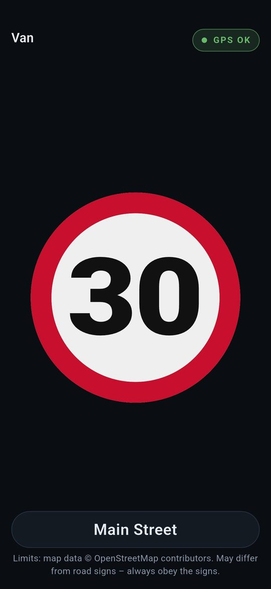
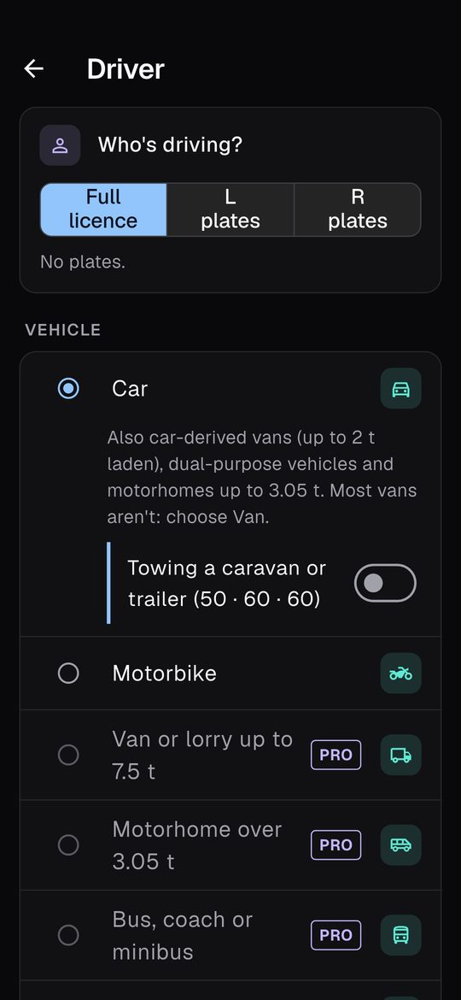
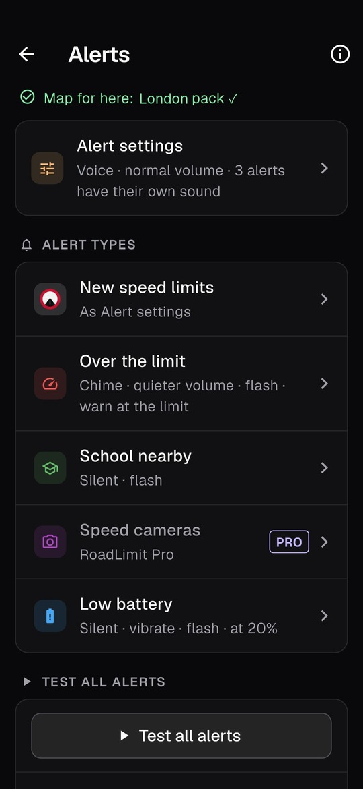
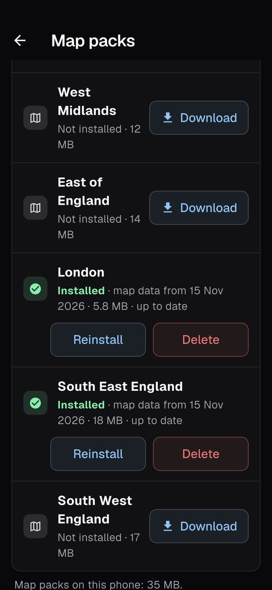

Screenshots





What RoadLimit does
Speed limits come from OpenStreetMap, the free map made by volunteers. Where the map doesn't say, RoadLimit makes a careful guess and marks it, so you always know which is which.
The limit, clearly
- A big speed limit sign, easy to read at a glance, with your speed beside it
- New limits spoken as you pass them, or a chime, or silent
- A warning when you go over, at the limit or a little before
- A guessed limit is marked "30?"
Your alerts, your way
- Voice or chime, volume, vibrate and a coloured flash round the screen edge
- "School nearby" as you pass a school
- L and R plates, including Northern Ireland's 45 mph for restricted drivers
- A low battery warning while driving
Works with your sat-nav
- Press Home and the sign floats over your sat-nav
- Quiet during phone calls, then the limit is said again
- Nothing to touch while you drive
Offline, and easy to put right
- Map packs for Northern Ireland, Scotland, Wales and nine English regions, downloaded on Wi-Fi and updated every month
- Check recent drives: say what a sign really showed, and RoadLimit uses your limit there on your phone
- Open any spot in OpenStreetMap to fix the map for everyone
Private by design
RoadLimit has no servers of its own. Your position stays on your phone.
No accountNothing to sign up for
No adsAnd no tracking or analytics
On your phoneMap areas are downloaded about 2 km at a time, never your exact position
UK onlyEngland, Scotland, Wales and Northern Ireland
Drive safely
RoadLimit is a driving aid. The speed limit is a maximum, not a target.
- Always obey the road signs: the map can be wrong or out of date.
- RoadLimit can't see temporary, variable or school-time limits.
- Set it up before you set off. It's illegal to hold or use a phone while driving.
Free, with an optional tip
RoadLimit is free, with no adverts. If it helps you, you can leave a tip in the app: it keeps the maps updated every month, and unlocks nothing. RoadLimit Pro is under development.
Questions, wrong limits or ideas? Email apps@andrewgawn.org. I'm a solo developer and reply as soon as I can.